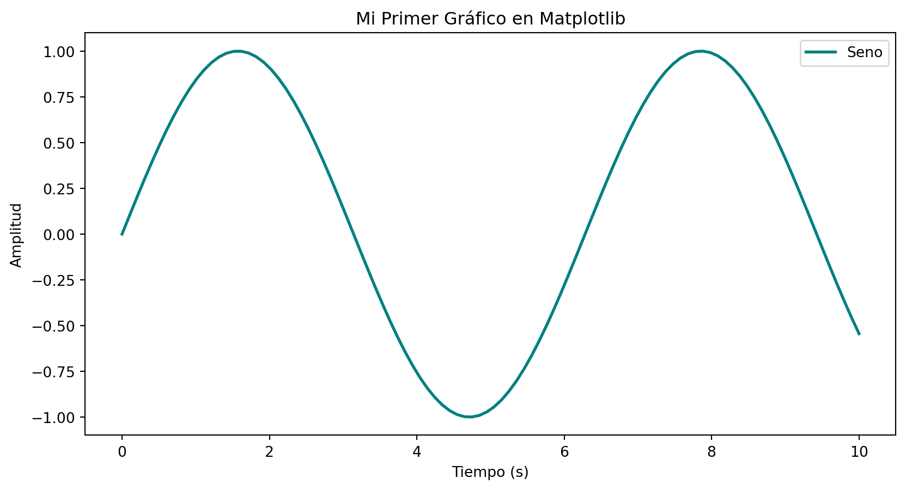
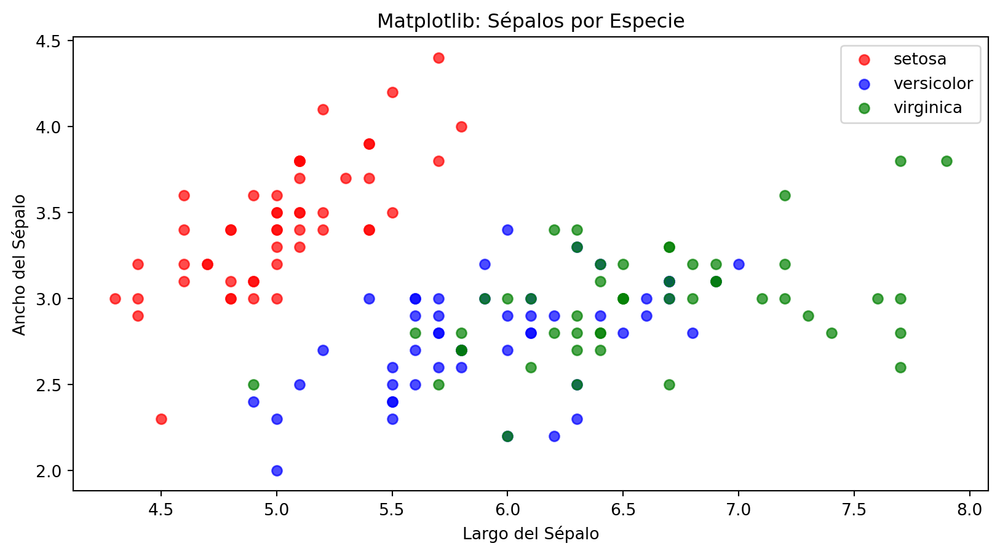

| sepal_length | sepal_width | petal_length | petal_width | species | |
|---|---|---|---|---|---|
| 0 | 5.1 | 3.5 | 1.4 | 0.2 | setosa |
| 1 | 4.9 | 3.0 | 1.4 | 0.2 | setosa |
| 2 | 4.7 | 3.2 | 1.3 | 0.2 | setosa |
| 3 | 4.6 | 3.1 | 1.5 | 0.2 | setosa |
| 4 | 5.0 | 3.6 | 1.4 | 0.2 | setosa |
Visualización en Python
Matplotlib y Seaborn
Fernando Salcedo Mejía Eco, Ms
2026-04-20
Introducción
En el ecosistema de Python, existen básicamente dos librerías principales para la visualización de datos, cada una con una filosofía distinta:
- Matplotlib: El motor base (bajo nivel).
- Seaborn: Enfoque más estadístico (alto nivel).
Dataset Iris
Para ilustrar las diferencias entre las librerías, utilizaremos el dataset Iris, que contiene mediciones de 150 flores de tres especies diferentes: - Especies: Setosa, Versicolor y Virginica. - Variables: Largo y ancho del sépalo, largo y ancho del pétalo.
Matplotlib
Es la librería más antigua y robusta. Se basa en una jerarquía de objetos.
Anatomía de una Figura
- Figure: El lienzo total.
- Axes: El gráfico individual (donde viven los datos).
- Axis: Los ejes X e Y con sus marcas.
Enfoques
- Funcional (pyplot): Rápido para scripts simples.
- Orientado a Objetos: Recomendado para personalización avanzada y subplots.
Ejemplo Matplotlib 1
Ejemplo Matplotlib 2
import matplotlib.pyplot as plt
import numpy as np
# Creamos los datos
x = np.linspace(0, 10, 100)
y = np.sin(x)
# 1. Creamos la figura y los ejes (el lienzo y el espacio de dibujo)
fig, ax = plt.subplots()
# 2. Dibujamos sobre el objeto 'ax'
ax.plot(x, y, label='Seno', color='teal', linewidth=2)
# 3. Personalizamos (títulos, etiquetas)
ax.set_title('Mi Primer Gráfico en Matplotlib')
ax.set_xlabel('Tiempo (s)')
ax.set_ylabel('Amplitud')
ax.legend()
# 4. Mostramos el resultado
plt.show()
Ejemplo Matplotlib 3
Matplotlib requiere definir manualmente la lógica de los colores si queremos diferenciar por especies.
import matplotlib.pyplot as plt
import seaborn as sns # Solo para cargar los datos
iris = sns.load_dataset('iris')
colors = {'setosa': 'red', 'versicolor': 'blue', 'virginica': 'green'}
fig, ax = plt.subplots()
for especie, df in iris.groupby('species'):
ax.scatter(df['sepal_length'], df['sepal_width'],
label=especie, color=colors[especie], alpha=0.7)
ax.set_title('Matplotlib: Sépalos por Especie')
ax.set_xlabel('Largo del Sépalo')
ax.set_ylabel('Ancho del Sépalo')
ax.legend()
plt.show()
Seaborn
Construida sobre Matplotlib, simplifica la creación de gráficos complejos y atractivos.
Características clave
- Integración con Pandas: Usa DataFrames directamente.
- Mapeo semántico: Parámetros como
hue,sizeystylepermiten añadir dimensiones fácilmente. - Funciones por Familia:
relplot()(Relacional)displot()(Distribución)catplot()(Categorías)
Seaborn: Análisis Estadístico
Seaborn simplifica el proceso al integrar el mapeo de colores (hue) directamente desde el DataFrame.
Seaborn : Análisis estadístico comlejos
- Algunos plots de seaborn son muy interesantes para la visualización estadística. Solamente como ejemplo, mostraremos el Pair Plot, donde se muestran las relaciones entre pares de atributos de un conjunto de ejemplos.
¿Cuándo usar cuál?
Usa Matplotlib cuando necesites un control total, quieras personalizar detalles mínimos de los ejes o estés creando una visualización muy específica que no encaja en plantillas.
Usa Seaborn para exploración de datos (EDA), cuando trabajes con Pandas y cuando necesites gráficos estadísticos elegantes de forma rápida.
| Característica | Matplotlib | Seaborn | |
|---|---|---|---|
| Nivel | Bajo | Alto | |
| Filosofía | Imperativa | Temática | |
| Facilidad | Media | Alta | |
| Control | Total | Alto |
Referencias

UTB-ETD | Programa de Ciencia de Datos